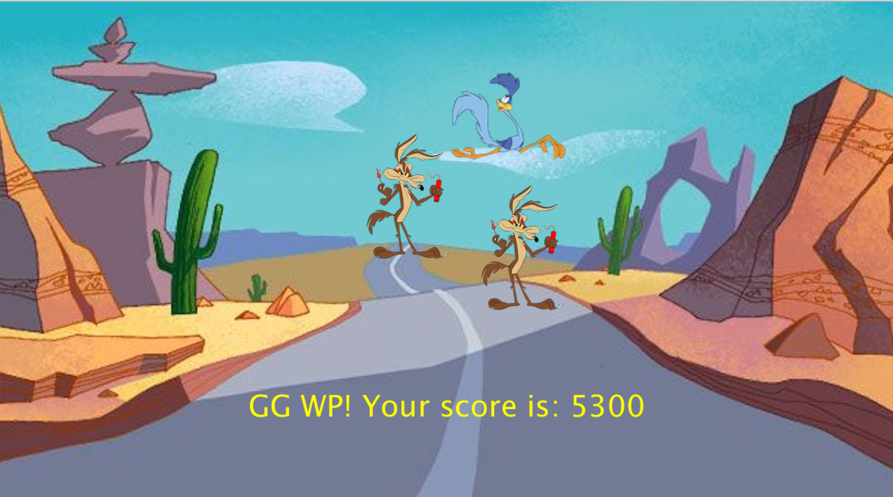
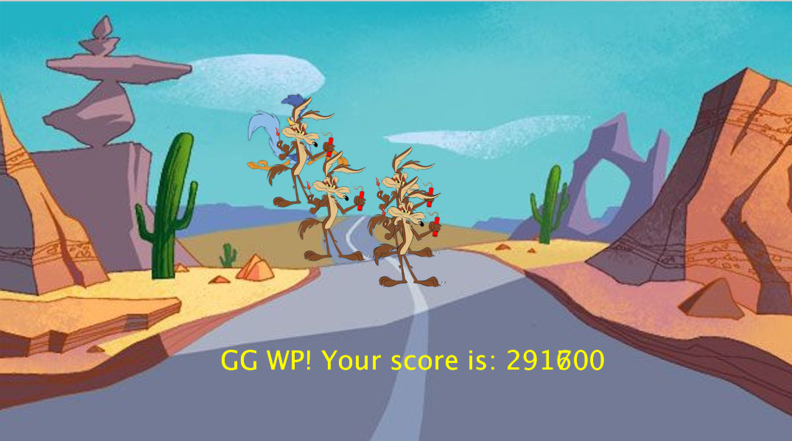

Game, made in Processing
Discription
This is a game made a in Java. The Platform i used is called Processing, which focuses more on designing visual elements.
The idea for the game is inspired by one of my favourite childhood cartoons, called Road runner. In the game you control the runner, a.k.a. the ostrich via the mouse or touchpad. And your goal is to run away from the coyotees, which spawn every couple of seconds and increase their count. So for the more time you run from a coyotee, the more they spawn and each coyotee is also faster than the previous one. Your score is increased every second you stay alive and the game ends when you get caught.
 